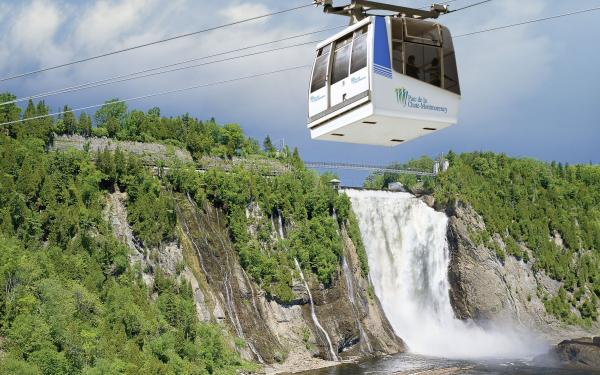
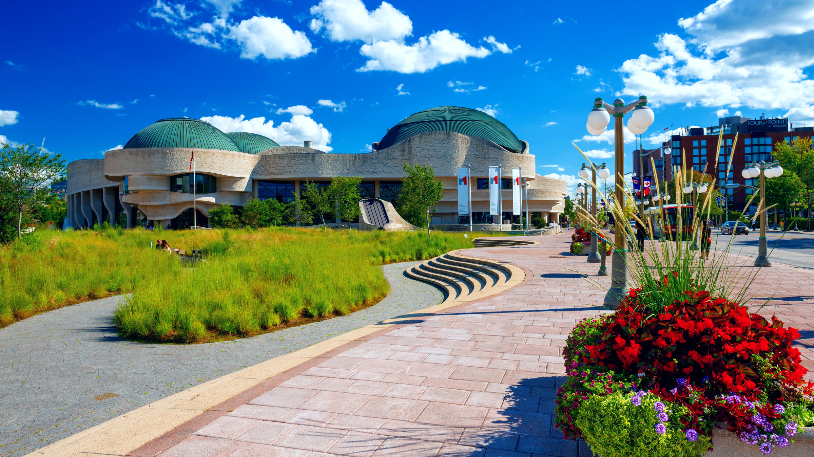

The City Of Montreal
The Montreal Museum of Fine Arts

The Montreal Museum of Fine Arts is an art museum in Montreal, Quebec. The MMFA spread across 5 pavilions.
It's permanent collections include approximately 44,000 items in 2013.
In 2022, it was the most visitied art museum in Cananda.
Ages 31 and over - $24
Ages 21 to 30 - $16
Ages 20 and under - Free
Members - Free
Wednesday nights, 21 years and older - $12
Wednesday nights, 20 and under - Free
Mount Royal Park
Mount Royal Park is a 4-season playground. It is a recreational plays for jogging, cycling, boating, skating, skiing, and tobogganing.
Family can also enjoy fresh air while on a picnick. With tree locations visitors can visit(Smith House, the Chalet and the Beaver Lake Pavilion).
The City Of Quebec

Montmorency Falls

This falls has a high of 83m, 30m taller than Niagara Falls. It is only 15min away from old Quebec.
If you are planning to visit this falls, it is better to visit during summer.
Visitors can walk on the suspendid bridge. You can take cable car to the top of the cliff.
On your way down, you can choose to take the cable car back or take the 300m zipline in the air.
Museum Of Civilization
This is the most popular museum in Quebec City. This museum allows visitors to interact with some of the discovery.
People can also do workshops with their family. Guided tour is available but with scheduled time.